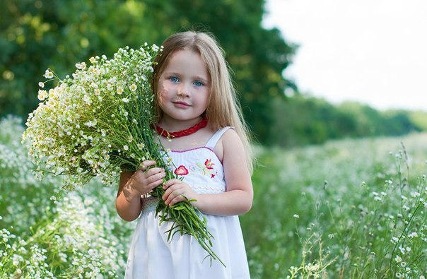
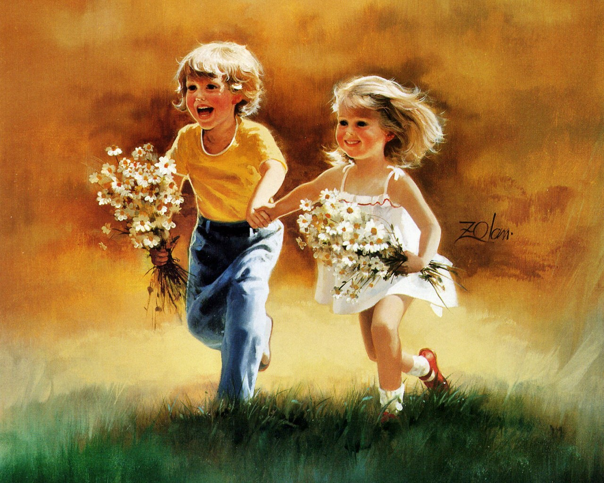

«Слушайте чада Родов Великих и потомки Рода Небесного слова мои. Запомните и передайте потомкам вашим. Будущее для Родов ваших проистикает из Прошлого Родов ваших, ибо вы сами сотворяете своё Будущее, ведомые Любовью, живущей в сердцах. И ежели никогда не было в Прошлом Любви в Сердцах и Родах ваших, то нет и Будущего для Родов ваших, а значит безсмысленно и Настоящее, и все, что сотворяете для Родов ваших и потомков ваших, обратится в прах. Запомните, будет Любовь в сердце вашем, значит будет и Будущее у Родов ваших».
Слово Мудрости волхва Велимудра

ЗАПОВЕДИ ДЛЯ РОДИТЕЛЕЙ
1. Не жди, что твой ребенок будет таким, как ты или таким, как ты хочешь. Помоги ему стать не тобой, а собой.
2. Не требуй от ребенка платы за все, что ты для него сделал. Ты дал ему жизнь, как он может отблагодарить тебя? Он даст жизнь другому, тот - третьему, и это необратимый закон благодарности.
3. Не вымещай на ребенке свои обиды, чтобы в старости не есть "горький хлеб". Ибо, что посеешь, то и пожнешь.
4. Не относись к его проблемам свысока. Жизнь дана каждому по силам и, будь уверен, ему она тяжела не менее, чем тебе, а может быть и больше, поскольку у него нет опыта.
5. Не унижай!
6. Не забывай, что самые важные встречи человека - это его встречи с детьми. Обращай больше внимания на них - мы никогда не можем знать, кого мы встречаем в ребенке.
7. Не мучь себя, если не можешь сделать что-то для своего ребенка. Мучь, если можешь - но не делаешь. Помни, для ребенка сделано недостаточно, если не сделано все.
8. Ребенок - это не тиран, который завладевает твоей жизнью, не только плод плоти и крови. Это та драгоценная чаша, которую Жизнь дала тебе на хранение и развитие в нем творческого огня. Это раскрепощенная любовь матери и отца, у которых будет расти не "наш", "свой" ребенок, но душа, данная на хранение.
9. Умей любить чужого ребенка. Никогда не делай чужому то, что не хотел бы, чтобы делали твоему.
10. Люби своего ребенка любым - не талантливым, неудачливым, взрослым. Общаясь с ним - радуйся, потому что ребенок - это праздник, который пока с тобой.
Детская любовь
Нет чище любви детей.
От детства солнечных лучей
И где за «чистую монету» принимая все до мелочей,
С открытою душою, обнимая всех людей,
Не ведая их злобы и страстей.
В глазах ребенка преданность всегда,
Он ждет любви такой же от тебя,
Где понимание друг друга,
И радости общенья,
Где добрая рука,
Погладит ласково наивное дитя.
О, Взрослый мир! Ты так жесток,
Даешь ты детям – отвратительный урок.
Что развивается в их душах – болезненный порок.
Своим примером жизни, калеча души,
Вы заставляете любви угаснуть.
И ненависти, алчности проснуться,
И в серость гнева окунуться.
Родитель, успей же оглянуться!
И загляни ребенку своему в глаза,
Там Космоса всего душа,
Любви, добра полна.
Но от беспомощности еще мала,
И полностью, родитель, доверяет, ждет тебя.
А ты, в проблемах окунувшись,
Летишь неведомо куда,
Забыв, что главное-то в жизни,
Это Божье, тобой произведенное на Свет дитя.
Давая обещанья детям, мы порою,
Потом забыв, как мелочь это,
Машем от них рукою.
А детская душа так ждет,
Любовью все обиды пережжет.
Но и в ее душе осадок остается,
Росток неверия вдруг разрастется.
Так души детские ранимы,
Заботиться о них должны мы.
Своей любовью и вниманьем окрыляя,
Своим примером жизни воспитая,
Любите же детей, с Космического края.
И знайте, что сам Бог им Покровитель с самого рожденья,
Ведь Он – Создатель такого чудного творенья!
(С) Панькова Е.Г.
